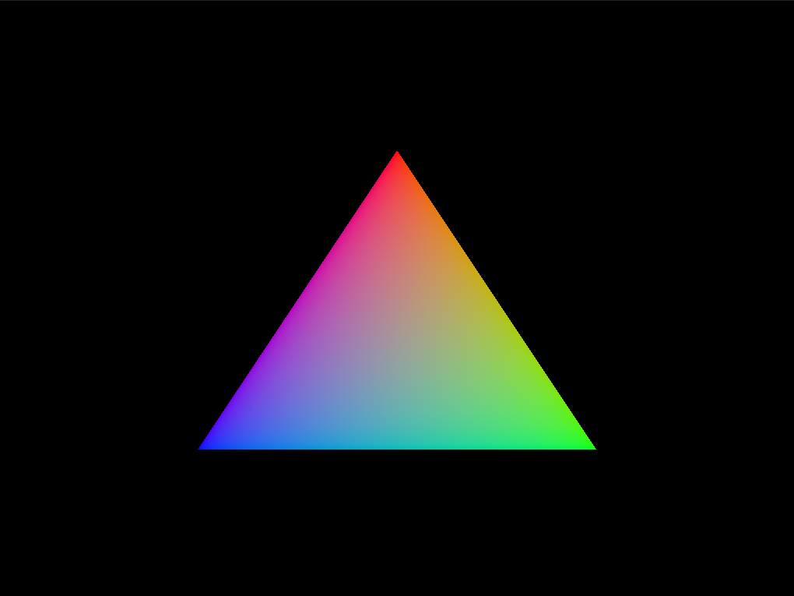

From Hardcoded to Dynamic: Managing Vertex Buffers in Vulkan
Zero AI was used to write this blog post! A miraculous wonder that does not exist anymore!
Why are we doing this?
Two years ago I optimistically began working on my block-game with the intention of building it up bottom
up from first principles. Not relying on any game engine and graphics engine. About two weeks later I
finally built the Hello World equivalent of graphics programming: Drawing a triangle

and subsequently was so exhausted by the complexity of what I was doing that I put this project
on hiatus.
It’s 2025 now, and I’ve grown a lot more comfortable in complexity. My programming skills have in general also improved by a lot, so it was time to continue what I started.
The biggest problem to fix
The biggest problem the code had, was hardcoded variables. It might’ve drawn a triangle on the screen, but the coordinates (and color values) of the edges of that triangle were hardcoded in a shader file that compiled it to machine code manually. Which basically meant that if you wanted to change the coordinates of those edges, you’d have to:
- manually change them in that file,
- compile them to machine code with a command line script,
- and then rerun the Rust code.
I hope you realize that this wouldn’t work for a graphics engine. In a game when we break a block, we need that block to disappear. Right now that isn’t possible since all coordinates are fixed until we restart our ‘game’.
The setup/The plan
You would think that this is not that hard. Just define the variables in the Rust code and send them over to the GPU so it can draw them whenever required. Nevertheless it is not that easy. Our Rust code is executed on the CPU, and in general the CPU can’t access the GPU’s memory and vice versa.
Except if you are on Apple silicon and even then there are some caveats where the CPU can’t always access the GPU’s memory even though they share the same memory.
Luckily there exists a part of memory that doesn’t necessarily belong to either the CPU or GPU, a space that both of them can access. Nice! You would think, let us just copy our data to that memory and then the GPU can just grab it and use it. You would actually be correct here, that is the basic gist of what we will do. It will just be way harder and more convoluted than you would think, especially since the GPU is a highly specialized machine that needs to know exactly what it will get, what it needs to be used for and when it needs to be used.
The basic plan we will follow is this:
- Construct our coordinate data.
- Construct a piece of paper that tells us: the type of data we have, the size of our data (in bytes), what the data will be used for, how many processes are supposed to be able to access the data and some other configurations we will set to default for now.
- Figure out, given our constraints above, what are the requirements we need for this data to be stored properly in the shared pool of memory and in the GPU?
- Find a memory type that for fills the requirements from the previous step
- Now we actually allocate some memory in the shared pool that both GPU and CPU can access.
- Give our piece of paper from step 2 to the GPU, so it knows what it has to do with the data when it has access to it.
- Acquire the address of where we will copy our data in shared memory.
- Copy the data.
- Throw away the address for optimization’s sake.
I hope you now see that this is harder that it seems. Let us get to it.
Vertices
So, right now our vertex(coordinate) data is hardcoded in our shader file:
#version 450
layout(location = 0) out vec3 fragColor;
vec2 positions[3] = vec2[](
vec2(0.0, -0.5),
vec2(0.5, 0.5),
vec2(-0.5, 0.5)
);
vec3 colors[3] = vec3[](
vec3(1.0, 0.0, 0.0),
vec3(0.0, 1.0, 0.0),
vec3(0.0, 0.0, 1.0)
);
void main() {
gl_Position = vec4(positions[gl_VertexIndex], 0.0, 1.0);
fragColor = colors[gl_VertexIndex];
}
Observe the vectors vec2 and vec3 that are defined, they represent the triangle that is currently drawn on the screen when the program is run. Our first step is then to take this representation, and put it in our Rust code:
pub struct Vertex {
pos: [f32; 2],
color: [f32; 3],
}
const VERTICES: [Vertex; 3] = [
Vertex {
pos: [0.0, -0.5],
color: [1.0, 0.0, 0.0],
},
Vertex {
pos: [0.5, 0.5],
color: [0.0, 1.0, 0.0],
},
Vertex {
pos: [-0.5, 0.5],
color: [0.0, 0.0, 1.0],
},
];
You might wonder how this changes anything, since now the triangle is hard coded in our Rust code instead of the glsl shader code. The difference is that we can easily change the Rust code to dynamically generate vertices, for the shader file that is just not possible. Since we want to get our code working in the first place, it’s easier to just start with the hard coded version. When everything works properly, we can adjust how the vertices are created.
The Buffer
Imagine you are very rich and trying to find a yacht for some weekends. Sadly you are not that rich that you could just a buy a yacht yourself, hence you are planning to buy the yacht together with a a group of others and then timeshare it. Obviously you are so busy with drinking tea that you do not have the time to search for your humble new abode. So you call your handy butler and give him a specification of exactly what you want this new yacht to be. How big it should be, how many rooms it will have, that it needs a sauna and a swimming pool. This specification is exactly what a buffer is, a container that holds all the information/metadata about what data the GPU will receive and what that data will be used for.
Our Vertices is the data we want to give to the GPU, but the GPU obviously needs to know how much of its memory it should reserve for them. So we need to find out how much memory, in bytes, the Vertices take up:
let buffer_size_in_bytes = (VERTICES.len() * size_of::<Vertex>()) as u64;
Then we specify a few other tidbits about our buffer. Imagine you found and bought the yacht together with a group of other rich people. If we’d specify
vk::SharingMode::CONCURRENT
it would mean that each person could use the yacht at any moment whenever they’d want. So if you are is currently cruising on the yacht, Derek could just waltz in, grab the helm and start having their own party. That is why we use
vk::SharingMode::EXCLUSIVE
which is exactly the opposite: Only 1 person can use the yacht at any time, they have to take turns and verbally hand over the right of using the yacht before any other person can use it.
Furthermore, obviously our buffer, is a vertex buffer. Other specifications are not necessary at the moment, so we will leave them in their default state:
let buffer_create_info = vk::BufferCreateInfo {
size: buffer_size_in_bytes,
usage: vk::BufferUsageFlags::VERTEX_BUFFER,
sharing_mode: vk::SharingMode::EXCLUSIVE,
..Default::default()
};
And then we just call Vulkan’s own function to create the buffer:
let buffer = unsafe{ vulkan_logical_device.create_buffer(&buffer_create_info, None)? };
Memory requirements
Next we need to figure out what the requirements are for all the specifications we just made, in terms of memory layout. Therefore we give our buffer to a Vulkan function that then spits out all the memory requirements:
let buffer_mem_requirements = unsafe{ vulkan_logical_device.get_buffer_memory_requirements(buffer) };
Finding a suitable memory type
We now know what memory requirements are necessary for our data. Thus the next step is selecting the type of memory that supports whatever we want it to do. This is more convoluted than you would expect.
First we collect all possible memory types that our GPU supports:
let memory_properties = instance.get_physical_device_memory_properties(vulkan_application_data.physical_device);
Then we collect all the memory types that work with our data:
let allowed_memory_types = buffer_mem_requirements.memory_type_bits;
And finally we also want our memory to have some additional properties:
let requested_properties =
vk::MemoryPropertyFlags::HOST_VISIBLE | vk::MemoryPropertyFlags::HOST_COHERENT;
where HOST_VISIBLE memory allows the CPU to read and write to that memory and HOST_COHERENT allows changes that we have made with the CPU to that memory to automatically be seen by the GPU. So the CPU can write our vertex data into this memory and the changes are automatically synchronized so that the GPU sees that that the data has been updated.
Now we have all the information we need, the only thing we still need to do is go through all possible memory types and check if each memory type has all the requirements and properties we need. If this is the case, we can just return the index of that memory type, that is enough for the CPU and GPU to know what we are talking about.
Hence we
let number_of_different_memory_types = memory_properties.memory_type_count;
and then loop through all these memory types.
for memory_type_index in 0..number_of_different_memory_types {
let memory_type_is_allowed = (allowed_memory_types & (1 << memory_type_index)) != 0;
if memory_type_is_allowed {
let memory_type_properties = memory_properties.memory_types[memory_type_index as usize].property_flags;
let has_all_desired_properties = (memory_type_properties & requested_properties)
== requested_properties;
if has_all_desired_properties {
return Ok(memory_type_index);
}
Since the allowed memory types that the GPU gave us is a bitmask, we had to use bit wise operations to check equality. Each bit represents a memory type, we shift 1 left by the index to check if that bit is set. A more in depth explanation of how bitmasks and operations on them work will be done in a separate blog post.
To make our code easier to read, we abstract most of this code away into a function, which can then also have some proper error handling if things go wrong:
fn find_memory_type(
memory_properties: &vk::PhysicalDeviceMemoryProperties,
allowed_memory_types: u32,
requested_properties: vk::MemoryPropertyFlags,
) -> anyhow::Result<u32> {
let number_of_different_memory_types = memory_properties.memory_type_count;
for memory_type_index in 0..number_of_different_memory_types {
let memory_type_is_allowed = (allowed_memory_types & (1 << memory_type_index)) != 0;
if memory_type_is_allowed {
let memory_type_properties = memory_properties.memory_types[memory_type_index as usize].property_flags;
let has_all_desired_properties = (memory_type_properties & requested_properties)
== requested_properties;
if has_all_desired_properties {
return Ok(memory_type_index);
}
}
}
anyhow::bail!(
"Failed to find a suitable memory type for requested properties: {:?}",
requested_properties
);
}
Conclusively, we call the function we have just defined, and successfully get the index of the memory type that we can use for the vertices:
let buffer_memory_type_index = find_memory_type(
&memory_properties,
allowed_memory_types,
desired_properties
)?;
Allocating the GPU memory
Now that we know the memory type that we will use, we can allocate some memory of this memory type. This means we are telling the GPU which chunk of memory we want access to. To do this properly we need give Vulkan some extra information:
let allocation_info = vk::MemoryAllocateInfo {
s_type: vk::StructureType::MEMORY_ALLOCATE_INFO,
next: std::ptr::null(),
allocation_size: buffer_mem_requirements.size,
memory_type_index: buffer_memory_type_index,
};
You might be confused why s_type is defined as MEMORY_ALLOCATE_INFO, when the function we are calling is already called MemoryAllocateInfo. This is because we are communicating with the Vulkan Driver here, which runs in C code. A good way to visualize this is in the following way:
Our Rust code
↓
Vulkanalia (Rust wrapper that basically says: These Rust functions call these C functions)
↓
Vulkan Loader (C library)
↓
GPU Driver (C/C++ code from NVIDIA/AMD/Intel/etc.)
↓
Your Graphics card
Thus it does not matter how our Rust functions are called, those names disappear when Vulkanalia calls Vulkan’s functions. We still need to tell the Vulkan Driver that this info is of the type that allocates memory.
The next argument in the function allows us to specify extra information about the allocation, which is not necessary for our current goal, so we just give it an empty value. Now we can actually allocate the memory:
let allocated_memory = unsafe { vulkan_logical_device.allocate_memory(&allocation_info, None)? };
Binding the buffer to allocated memory
This speaks for itself, just link the buffer and the memory we just allocated together:
unsafe { vulkan_logical_device.bind_buffer_memory(buffer, allocated_memory, 0)? };
This does not mean that we have put any data in the memory we have allocated! We only linked the metadata of what we will do with this memory to the allocated memory.
Acquire the address (pointer) to the memory we allocated
So the GPU now knows what chunk of memory we want to access, and it knows what we want to do with it. The next step is asking the GPU to give us the address of that piece of memory.
let pointer_to_mapped_memory = unsafe {
vulkan_logical_device.map_memory(
allocated_memory, // Which GPU memory to map
vk::DeviceSize::default(), // Start at the beginning of the allocation
buffer_mem_requirements.size, // Map the entire allocation
vk::MemoryMapFlags::empty(), // No special flags needed
)?
};
When we ask for this address we also tell the GPU how much access we want, since we want access to all of the allocation we give buffer_mem_requirements.size as a parameter.
Copying the data
Since we just got a C pointer (address), but we are working in Rust, we have a caveat to work out. Rust does not know anything about the pointer we acquired, it is of type null. Hence if we would try to copy our data to the pointer, Rust would not allow it since this is undefined behavior. Therefore we basically need to tell Rust: Bro trust me, I got this. This pointer is of type T and is mutable:
let vertex_pointer = pointer_to_mapped_memory as *mut T;
And then we can happily copy our vertex data into the GPU memory:
unsafe {
copy_nonoverlapping(
VERTICES.as_ptr(), // Source: CPU memory containing our data
vertex_pointer, // Destination: Mapped pointer to GPU memory
VERTICES.len(), // Number of elements to copy
)
};
Unmapping the memory
Conclusively, we need to unmap the pointer to the GPU-CPU shared memory that we still have,
unsafe{ vulkan_logical_device.unmap_memory(allocated_memory) };
which is done for optimization reasons. Unmapping the pointer means we don’t have the address anymore of where we put our data and hence can’t access it anymore.
That’s it!
Recap
We started with hard-coded vertex data outside our Rust code, by putting this data into Rust itself as a variable we had to add quite some functionality to make sure that the GPU can still acquire our vertices and hence draw a triangle on the screen. First, we had to construct a buffer that holds the metadata of what is necessary for our vertex data to be put into GPU memory. Then, we figured out which memory type supports our vertex data, and allocated memory in the GPU. Furthermore, we binded our buffer to this allocation and then, after acquiring a pointer, copied our vertex data to the memory. Finally, we unmapped our pointer for optimization.
The result (after some extra work of changing shaders and calling functions in the pipeline) is
unspectacular, nothing changed!
Nevertheless, don’t forget how much code we’ve changed. Everything works identical, but now we have way
more flexibility in how we define our vertices. Now we can regenerate vertices every frame based on
player input, physics, or procedural generation!
Next steps/What will the next blog post be about
Next step will be trying to draw textures on our triangle and then draw a cube, but for us to be able to see the cube we need a working camera system. And to be fair, texture mapping is apparently harder than what we just did, so that might take a while. You can follow my progress at: https://github.com/Hiddentale/Learning_Vulkan, note that I work on separate branches and hence don’t push my changes to the main branch except for pull requests. Thus the changes will only be visible if you look at sub-branches.
Full code
use crate::graphical_core::vulkan_object::VulkanApplicationData;
use anyhow;
use std::{mem::size_of, ptr::copy_nonoverlapping};
use vulkanalia::{
vk::{self, DeviceV1_0, InstanceV1_0},
Device, Instance,
};
/// Allocates GPU buffer memory, copies data from CPU to GPU, and returns handles.
///
/// # Process Overview
/// 1. Create a buffer object (defines size and usage, but no memory backing yet)
/// 2. Query memory requirements (alignment, size, compatible memory types)
/// 3. Find a suitable memory type (HOST_VISIBLE so CPU can write to it)
/// 4. Allocate GPU memory
/// 5. Bind the buffer to the allocated memory (connect buffer handle to actual memory)
/// 6. Map the memory (get a CPU pointer to the GPU memory)
/// 7. Copy data from CPU to GPU via the mapped pointer
/// 8. Unmap the memory (invalidate the CPU pointer, but data persists in GPU memory)
///
/// # Memory Type Strategy
/// Uses HOST_VISIBLE | HOST_COHERENT memory:
/// - HOST_VISIBLE: CPU can map and write to this memory
/// - HOST_COHERENT: CPU writes are immediately visible to GPU (no manual flushing needed)
///
/// # Parameters
/// - data_slice: The data to upload (vertices, indices, etc.)
/// - buffer_usage_flags: What the buffer will be used for (VERTEX_BUFFER, INDEX_BUFFER, etc.)
/// - vulkan_logical_device: The logical device to create resources with
/// - instance: Needed to query physical device properties
/// - vulkan_application_data: Contains the physical device handle
///
/// # Returns
/// A tuple containing:
/// - vk::Buffer: The buffer handle (used to bind for drawing)
/// - vk::DeviceMemory: The memory allocation backing the buffer (needed for cleanup)
///
/// # Safety
/// This function is marked `unsafe` because it:
/// - Uses raw pointers via `map_memory`
/// - Performs unchecked memory operations via `copy_nonoverlapping`
/// - Requires the caller to ensure proper cleanup (destroy buffer and free memory)
///
/// # Errors
/// Returns an error if:
/// - Buffer creation fails
/// - Memory allocation fails
/// - No suitable memory type is found
/// - Memory mapping fails
pub unsafe fn allocate_and_fill_buffer<T>(
data_slice: &[T],
buffer_usage_flags: vk::BufferUsageFlags,
vulkan_logical_device: &Device,
instance: &Instance,
vulkan_application_data: &mut VulkanApplicationData,
) -> anyhow::Result<(vk::Buffer, vk::DeviceMemory)> {
let buffer_size_in_bytes = (data_slice.len() * size_of::<T>()) as u64;
let buffer_create_info = vk::BufferCreateInfo {
size: buffer_size_in_bytes,
usage: buffer_usage_flags,
sharing_mode: vk::SharingMode::EXCLUSIVE,
..Default::default()
};
let buffer = unsafe { vulkan_logical_device.create_buffer(&buffer_create_info, None)? };
let buffer_mem_requirements = unsafe {
vulkan_logical_device.get_buffer_memory_requirements(buffer) };
let memory_properties = instance.get_physical_device_memory_properties(vulkan_application_data.physical_device);
let allowed_memory_types = buffer_mem_requirements.memory_type_bits;
let desired_properties = vk::MemoryPropertyFlags::HOST_VISIBLE | vk::MemoryPropertyFlags::HOST_COHERENT;
let buffer_memory_type_index = find_memory_type(&memory_properties, allowed_memory_types, desired_properties)?;
let allocation_info = vk::MemoryAllocateInfo {
s_type: vk::StructureType::MEMORY_ALLOCATE_INFO,
next: std::ptr::null(),
allocation_size: buffer_mem_requirements.size,
memory_type_index: buffer_memory_type_index,
};
let allocated_memory = unsafe { vulkan_logical_device.allocate_memory(&allocation_info, None)? };
unsafe { vulkan_logical_device.bind_buffer_memory(buffer, allocated_memory, 0)? };
let pointer_to_mapped_memory = unsafe {
vulkan_logical_device.map_memory(
allocated_memory, // Which GPU memory to map
vk::DeviceSize::default(), // Start at the beginning of the allocation
buffer_mem_requirements.size, // Map the entire allocation
vk::MemoryMapFlags::empty(), // No special flags needed
)?
};
let vertex_pointer = pointer_to_mapped_memory as *mut T;
unsafe {
copy_nonoverlapping(
data_slice.as_ptr(), // Source: CPU memory containing our data
vertex_pointer, // Destination: Mapped pointer to GPU memory
data_slice.len(), // Number of elements to copy
)
};
unsafe { vulkan_logical_device.unmap_memory(allocated_memory) };
Ok((buffer, allocated_memory))
}
/// Finds a memory type that satisfies both hardware requirements and desired properties.
/// # Parameters
/// - `memory_properties`: The GPU's available memory types and their properties
/// - `allowed_memory_types`: Bitmask of which memory types the buffer supports
/// - `desired_properties`: The properties we need
///
/// # Returns
/// The index of the first suitable memory type found.
///
/// # Errors
/// Returns an error if no memory type satisfies both requirements.
fn find_memory_type(
memory_properties: &vk::PhysicalDeviceMemoryProperties,
allowed_memory_types: u32,
requested_properties: vk::MemoryPropertyFlags,
) -> anyhow::Result<u32> {
let number_of_different_memory_types = memory_properties.memory_type_count;
for memory_type_index in 0..number_of_different_memory_types {
let memory_type_is_allowed = (allowed_memory_types & (1 << memory_type_index)) != 0;
if memory_type_is_allowed {
let memory_type_properties = memory_properties.memory_types[memory_type_index as
usize].property_flags;
let has_all_desired_properties = (memory_type_properties & requested_properties) == requested_properties;
if has_all_desired_properties {
return Ok(memory_type_index);
}
}
}
anyhow::bail!(
"Failed to find a suitable memory type for requested properties: {:?}",
requested_properties
);
}